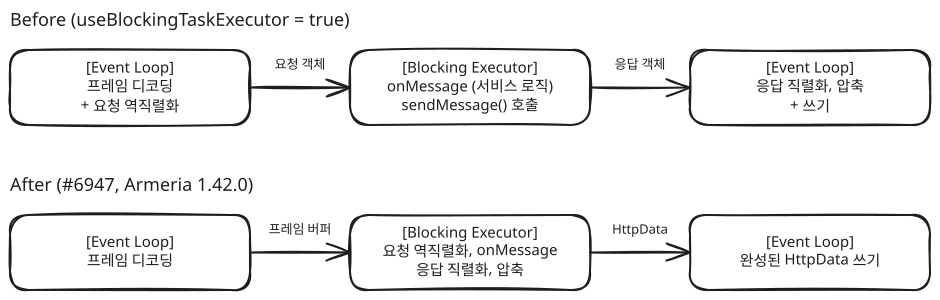

gRPC 응답 폭증을 Armeria 내부 결함까지 추적
비욘드메디슨 · Clickless · 2026.08
장애 추적
KotlinArmeriagRPCAWS ALB
배경
dev 환경에서 Postman의 gRPC 호출이 504로 끊기고, dashboard CPU가 100%로 7시간 넘게 포화됐습니다. 예외가 나지 않아 에러 알림에 잡히지 않았고, 업무 RPC는 정상이라 장애로 인식되지 않던 상태였습니다. 원인이 된 변경은 두 달 전에 이미 배포돼 있었습니다.
추적과 판단
분기점 찾기
ALB 액세스 로그에서 리플렉션 응답의 건당 크기를 날짜별로 집계했습니다. 06-17 4.2KB에서 06-18 864.9KB로 하루 만에 200배 커졌고, 그날 배포된 변경은 인터셉터를 코루틴 기반으로 바꾼 리팩터링이었습니다.
가설 기각과 최소 재현
의심받던 라이브러리 일괄 상향은 Armeria 1.38과 1.40에서 똑같이 재현돼 기각했습니다. 아무 일도 하지 않는 코루틴 인터셉터만 걸어도 같은 현상이 재현돼, 인터셉터의 내용이 아니라 종류가 조건임을 확인했습니다.
근본 원인
ProtoReflectionServiceV1은 onReady 신호마다 대기 중인 응답을 보내고, 응답을 쓴 뒤에야 처리 중인 요청을 비웁니다. Armeria의 non-blocking 경로가 진행 중인 콜백 안에서 onReady()를 다시 호출하면서 같은 응답이 반복 전송됐습니다. ALB의 60초 제한은 원인이 아니라 결함을 드러낸 계기였습니다.
결과
요청 1건에 돌아온 응답 메시지(정상 1개)
237개
팀은 리플렉션을 인터셉터 없는 별도 서비스로 분리하고 운영 환경에서는 등록하지 않는 방식으로 우회했습니다. 근본 원인은 순정 Armeria로 만든 최소 재현(요청 6건에 응답 11건)과 함께 이슈로 등록했고(#6938), 수정 PR(#6931)은 진행 중입니다.
LINE Armeria gRPC 모듈 기여
오픈소스 · line/armeria · 2026.04 - 현재
스레드 모델
JavaNettygRPC
#6947 Before / After

배경
Armeria는 Netty 기반 JVM 마이크로서비스 프레임워크이고, 회사 서비스가 gRPC 서버로 쓰고 있습니다. 업무에서 만난 gRPC 문제를 프레임워크 코드까지 따라가 이슈와 PR로 올렸습니다.
기여 내역
#6947 머지 (1.42.0) — blocking executor 사용 시 gRPC 직렬화·역직렬화의 실행 스레드 수정
blocking executor를 켜도 요청 역직렬화와 응답 직렬화가 이벤트 루프에서 돌던 결함(#6241)을 고쳤습니다. 버퍼가 스레드를 건너게 되면서, 역직렬화가 실패하면 대기 중인 콜백을 건너뛰고 보내지 못한 응답 버퍼는 해제하도록 했습니다. 압축 협상도 직렬화보다 먼저 끝나도록 헤더 처리 위치를 옮겼습니다.
#6717 머지 (1.40.0 신규 기능) — 비동기 gRPC 예외 핸들러
에러 메시지 다국어 조회에 runBlocking을 쓰던 사내 코드에서 출발해, 동기 전용이던 예외 핸들러의 비동기 지원(applyAsync)을 제안하고 구현했습니다.
#6938 이슈 · #6931 진행 중 — onReady() 재진입
앞의 리플렉션 사례에서 찾은 결함의 수정입니다.
결과
1.40.0과 1.42.0 릴리스 노트에 기여자로 이름이 올랐습니다.
운영 조건을 재현해 리포트 API의 GC 병목 확인
비욘드메디슨 · Clickless · 2026.06
성능 분석
KotlinJVMSerialGCAWS ECS
배경
데이터를 메모리로 끌어와 가공하는 API가 사용자 증가를 버티는지 판단이 필요했습니다. 정적 분석으로 고위험 지점을 고른 뒤 가장 무거운 리포트 API를 실측했고, 힙 1GB·멀티코어로 처음 잰 결과는 안전해 보였습니다.
추적과 판단
측정 조건이 운영과 달랐다
처음 측정은 개발 장비 기준이었습니다. 운영 태스크는 힙과 코어가 훨씬 작아 JVM이 다른 GC를 고르기 때문에(그림의 운영 조건), 같은 조건을 로컬에 만들어 다시 측정하니 GC 병목이 드러났습니다.
원인 분리
변수를 하나씩 바꿔 보니 힙을 늘리면 처리량이 좋아졌고, 코어를 늘린 구성(2vCPU, G1)은 같은 힙의 1코어 구성과 결과가 거의 같아 권고하지 않았습니다.
결과
GC에 쓰인 CPU (Full GC 863회)
44%
안정 동시 처리 (힙 256MB → 512MB)
약 1건→약 6건
현재 운영 조건에서 동시 12요청의 p99는 19.26초였습니다. 요청당 적재 행 축소(근본 해결)와 태스크 메모리 상향(빠른 완화)을 권고했습니다.
Spring 컨텍스트 재기동을 없애 통합 테스트 시간 단축
비욘드메디슨 · Clickless · 2026.03
성능 개선
KotlinSpring BootTestcontainersH2Redis
기술 선택 이유
dashboard 통합 테스트에서 테스트 로직 자체에 드는 시간은 미미했고, 병목은 @DirtiesContext로 인한 Spring 컨텍스트 재기동이었습니다. baseline 측정 스크립트로 모듈별 실행 시간을 잰 뒤, 가장 오래 걸리는 모듈부터 개선했습니다.
테스트를 지우거나 assertion을 약하게 만들지 않고, 같은 검증을 유지한 채 재기동 비용만 줄이기로 했습니다.
트러블슈팅
Dashboard Bootstrap: 컨텍스트 재기동 제거
문제: 매 테스트 클래스마다 Spring Boot + Testcontainers가 재기동됨.
해결: cleanup 경로 구축. Redis는 clearRedisState(), DB는 snapshot restore. maxParallelForks=1로 캐시 보호. 테스트 42개는 그대로 유지.
DTX Outbound: 외부 연동 테스트 분리
문제: 외부 연동 테스트가 기본 test에 혼재.
해결: unit/component/bootstrap/external 4단계 분류, 외부 테스트는 전용 태스크로 분리.
성과
Dashboard 통합 테스트
206s→41s
-80%
운영 DB에 부담을 주지 않는 관리자 통계 집계 설계
마드라스체크 · 삼성화재 통계 고도화 · 2025.10 - 2026.03
아키텍처 설계
JavaNode.jsRedisPostgreSQLDocker
기술 선택 이유
기존 통계 조회는 원본 테이블을 매번 집계해 운영 테이블에 부하. 정렬 조회에서는 상관 서브쿼리가 사용자 수만큼(7,000명 × 3개) 반복 실행. 매 액션마다 DB에 직접 쓰면 본 서비스 응답 지연.
새 메시지 브로커를 도입하는 대신 기존 Redis를 버퍼로 쓰고, 별도 Node.js로 집계 부하를 WAS 밖으로 분리하는 구조 선택.
Redis HINCRBY/ZADD NX로 이벤트 누적을 원자적으로 처리, 키 패턴을 PK와 일치시켜 이관 비용 감소.
트러블슈팅
실시간성 vs 정렬 충돌
문제: Redis만으로는 SQL ORDER BY 정렬 불가.
해결: 배치 + 실시간 마이그레이션 이중 구조. 탭 클릭 시 Redis → PostgreSQL 즉시 이관 후 SQL 조회.
동시 마이그레이션 중복
문제: 동시 탭 클릭 시 중복 집계.
해결: Redis SET NX EX 분산 락.
전송 실패 시 유실
문제: HTTP 전송 실패 시 이벤트 유실.
해결: 로컬 파일 백업 → 자정 배치 복구.
성과
원본 테이블을 매번 집계하던 조회를 사전 집계 테이블 조회로 바꿔 운영에 반영했습니다. 전송 실패분은 파일 백업 → 배치 복구로 메우되, Redis → PostgreSQL 이관 중 들어온 1~2건의 오차는 관리자 통계 특성상 허용했습니다.
커넥션 풀 오염으로 생긴 간헐적 롤백 추적
마드라스체크 · Flow 공공기관 고객사 · 2026.01
장애 추적
JavaJDBCTomcat
배경
공공기관 고객사에서 즐겨찾기 순서를 바꾸면 성공 메시지가 뜬 뒤 간헐적으로 원래대로 돌아갔습니다. 같은 요청도 될 때와 안 될 때가 섞여 재현이 어려웠습니다.
추적과 판단
트랜잭션 없는 쓰기에서 출발
해당 API가 트랜잭션 없이 UPDATE한다는 점에서 출발해 사내 프레임워크 jar를 분석했습니다.
오염된 커넥션
프레임워크의 beginTransaction()은 auto-commit을 끄고, endTransaction()만 다시 켭니다. 그런데 endTransaction 없이 close()로 끝내는 코드가 있어 auto-commit이 꺼진 커넥션이 풀로 돌아갔고, 풀도 반납·대여 때 이 값을 되돌리지 않았습니다. 이 커넥션을 받은 즐겨찾기 API는 commit 없이 UPDATE만 하므로 변경이 커밋되지 않은 채 끝났습니다. 성공 메시지는 떴지만 다른 커넥션으로 다시 조회하면 변경 전 값이 보였고, 오염된 커넥션을 받은 요청에서만 생겨 간헐적으로 보였습니다.
결과
해당 API에는 트랜잭션 경계를 적용했고, 같은 위험(beginTransaction 뒤 endTransaction 누락)이 있는 파일 28개를 찾아 정리했습니다. 커넥션 반납 시 풀에서 auto-commit을 복구하도록 설정을 보완하는 방안도 제안했습니다.